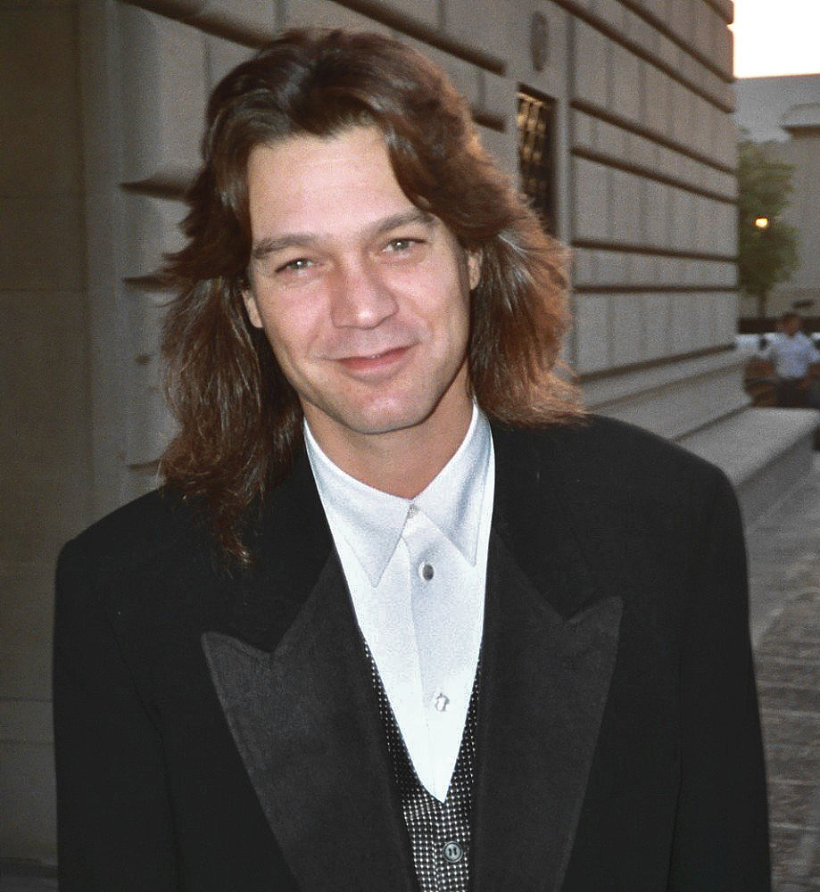

⚡ Pas le temps : le résumé 30 secondes
- 🟠 MXR Phase 90 (1974) — l'iconique. Un seul potard, tout le rock'n'roll dedans. Le son de Eruption.
- 🟢 EHX Small Stone (1975) — le liquide. Grain plus organique, circuit OTA. Le son de Jean-Michel Jarre.
- 👑 Mu-Tron Bi-Phase (1975) — le Saint Graal. Deux phasers dans un boîtier, opto-modulés.
Le phaser, c'est l'effet le plus mal compris de toute la modulation. Tout le monde l'a entendu — c'est ce swooosh qui ondule sur le riff d'Eruption, c'est ce balayage qui fait flotter Bridge of Sighs de Robin Trower, c'est cette respiration cosmique qui s'enroule autour de Do You Feel Like We Do. Et pourtant, demande à n'importe qui de le distinguer d'un chorus ou d'un flanger : silence gêné.
Dans cet article, on te raconte pourquoi le phaser est devenu LE son du rock 70s-80s, comment quatre maîtres absolus de la six-cordes en ont fait leur signature, et quelles sont les 3 pédales à connaître absolument en 2026. Allume ton ampli. Et si tu débutes, passe d'abord par notre guide pour choisir ses pédales d'effets.
Les 3 Phasers essentiels

1974 · Analog JFET · L'iconique
Phase 90
MXR / Dunlop
Le premier produit MXR (1974), conçu par Keith Barr. Un seul potard — Speed — et tout le rock'n'roll dedans. Quatre étages de phasing JFET, pas de mix, pas de feedback, pas d'option : tu tournes le bouton, tu trouves ta vitesse, c'est tout. La radicalité minimaliste du Phase 90 est exactement ce qui lui donne son charme.
🎸 Qui l'a utilisée ?
Eddie Van Halen sur Eruption, Atomic Punk, Ain't Talkin' 'bout Love — Dunlop a fini par lui faire un modèle signature (EVH Phase 90). Robin Trower sur tout l'album Bridge of Sighs. Tom Morello chez Rage Against the Machine. Matt Bellamy sur les solos de Muse.
1975 · Analog OTA · Le liquide
Small Stone
Electro-Harmonix
Conçu par David Cockerell (ex-EMS, déjà l'ingénieur des synthés VCS3 utilisés par Pink Floyd). L'autre grand phaser analogique, basé sur des OTA au lieu de JFET, ce qui lui donne un grain plus liquide, plus organique, plus « tridimensionnel » que la Phase 90. Deux contrôles : Rate et un switch Color qui ajoute du feedback.
🎸 Qui l'a utilisée ?
Jean-Michel Jarre a construit toute la sonorité d'Oxygène (1976) et d'Équinoxe (1978) avec une Small Stone branchée sur ses claviers. Tom Morello l'utilise en studio (il dit lui-même qu'elle sonne mieux que la Phase 90). Jonny Greenwood chez Radiohead. Frank Zappa.
1975 · Opto-modulation · Le Saint Graal
Bi-Phase
Mu-Tron / Musitronics
Le Saint Graal absolu du phaser. Conçu par Musitronics en 1975, c'est en réalité deux phasers indépendants dans le même boîtier — Phasor A et Phasor B — qu'on peut router en série ou en parallèle. Système opto-modulé (ampoule + photorésistance) qui donne ce balayage lent, organique, presque vivant, impossible à reproduire en numérique.
🎸 Qui l'a utilisée ?
Peter Frampton sur tout Frampton Comes Alive! (1976) — le son qui ondule sous le talkbox de Do You Feel Like We Do, c'est elle. Stevie Wonder sur ses Rhodes de l'ère Songs in the Key of Life. Billy Gibbons (ZZ Top) en studio. Adrian Belew sur Remain in Light des Talking Heads.